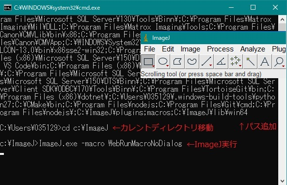
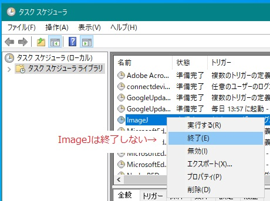

ImageJをPC起動時に自動実行したい場合があります。
タスクスケジューラを使うと簡単に実現できますが、ImageJ.exeを直接実行すると、GUIが表示されず、画像処理用のマクロが実行できませんでした。
タスクマネージャには実行中であることが表示されるのですが。。。
BATファイルでImageJを起動するとGUIは表示されるのですが、DOS窓も表示されてしまいます。

DOS窓を表示しないようにするためには、VBScriptを使えば可能です。([Windows] バッチファイル（.bat）を非表示・最小化した状態で起動するを参考にしました)
「ならVBScriptで全て実行してしまおう」と考え、 環境変数パスの追加、カレントディレクトリの移動、ImageJの起動など全てを実行するVBスクリプト作成してみました。 以下にサンプルとして挙げておきます。
ポイントは、
- WScript.ShellをRunする時にウィンドウ非表示の引数を指定すること。
- 最後に追加したパスを削除すること。こうしないと環境変数パスにどんどん追加されてしまいます。
Option Explicit
Const vbHide = 0 'ウィンドウを非表示
Const vbNormalFocus = 1 '通常のウィンドウ、かつ最前面のウィンドウ
Const vbMinimizedFocus = 2 '最小化、かつ最前面のウィンドウ
Const vbMaximizedFocus = 3 '最大化、かつ最前面のウィンドウ
Const vbNormalNoFocus = 4 '通常のウィンドウ、ただし、最前面にはならない
Const vbMinimizedNoFocus = 6 '最小化、ただし、最前面にはならない
Dim objWShell
Set objWShell = CreateObject("WScript.Shell")
'パス追加
Dim env
Set env = objWShell.Environment("User")
Dim env_ini
env_ini = env.Item("PATH")
env.Item("PATH") = env_ini & ";C:\ImageJ\plugins;macros;C:\ImageJ\lib\win64"
' MsgBox(env.Item("PATH")) 'デバッグ用
'カレントディレクトの移動
objWShell.CurrentDirectory = "C:\ImageJ"
'ImageJ起動
'・サンプルはvbHideにしています。
'・ImageJの引数に「 -macro ABC」も使えます。
objWShell.Run "ImageJ.exe", vbHide, False
env.Item("PATH") = env_ini 'こうしないと環境変数パスにどんどん追加されてしまいます。
Set objWShell = Nothing '無くても良いというページもありました。念のため、入れておきます。後は、タスクスケジューラにVBscriptを指定してやればOKです。
タスクスケジューラの「終了」でImageJも終了してほしいところですが、無理でした。

再起動したい時には、ImageJを直接閉じる -> 再びタスクスケジューラで「実行する」。
ちなみに起動しているプロセスの中から、ImageJ.exeを探索し終了するスクリプトは以下の通りです。
for each Process in _
GetObject("winmgmts:{impersonationLevel=impersonate}").ExecQuery("select * from Win32_Process where Name='ImageJ.exe'")
Process.terminate
Next